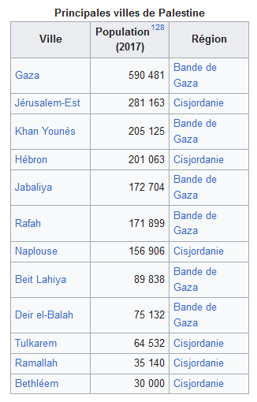
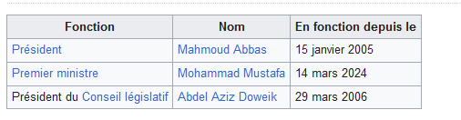

فلسطين
فلسطين، في شكل طويل دولة فلسطين (العربية: دولة فلسطين، دولة فلسطين)، هي دولة ذات سيادة بحكم القانون (القانون الفلسطيني). تقع في الشرق الأوسط، وتتواجد في الأراضي الفلسطينية المحتلة وتطالب بالقدس الشرقية والضفة الغربية بأكملها. حدودها، بحكم الأمر الواقع، ومنذ عام 1994 (اتفاقات أوسلو)، هي حدود المنطقتين (أ) و(ب) في الضفة الغربية، والتي تحكمها السلطة الفلسطينية، وحدود قطاع غزة، الخاضع لسيطرة حماس منذ عام 2007 لكن السلطة الفلسطينية تطالب بها. سلطة. وعاصمتها هي القدس بحكم القانون، إلا أن مقر الحكومة الفلسطينية يقع في مدينة رام الله بسبب ضم القدس الشرقية إلى إسرائيل.
تم دمجها سابقًا في الإمبراطورية العثمانية، ثم أصبحت تحت الانتداب البريطاني بعد الحرب العالمية الأولى، ثم ظهرت كدولة مستقلة في أعقاب الحرب العربية الإسرائيلية في الفترة 1948-1949. احتفظت دولة فلسطين بإعلان 15 نوفمبر 1988 الصادر عن منظمة التحرير الفلسطينية في المنفى بالجزائر العاصمة باعتباره إعلان استقلالها وقبلته جامعة الدول العربية ومنظمة التعاون الإسلامي على هذا النحو. وفي عام 2011، انضمت فلسطين إلى اليونسكو. في 29 نوفمبر 2012، انضمت دولة فلسطين إلى الأمم المتحدة كدولة مراقبة غير عضو.
إن سيادتها الوطنية، والاعتراف الدولي بها، ولاجئيها، وأراضيها وحدودها، وعاصمتها ذاتها، هي موضوع صراعات مسلحة ومناقشات سياسية. في عام 2017، تم الاعتراف بدولة فلسطين من قبل 139 دولة (72% من الدول الأعضاء في الأمم المتحدة البالغ عددها 193 دولة)، ولكن لم يتم الاعتراف بها من قبل دول أمريكا الشمالية.
المدن الرئيسية
التاريخ
الفترة القديمة
احتل الفلسطينيون الجزء الجنوبي من بلاد الشام في أراضي فلسطين الحالية في القرن الثاني عشر قبل الميلاد. واستقروا على الساحل من غزة إلى يافا، واندمجوا مع السكان الكنعانيين المحليين. وفي وقت لاحق، وتحت السيطرة الرومانية، أطلق الإمبراطور دقلديانوس على فلسطين اسم المقاطعة المقابلة لجنوب بلاد الشام.
الفترة العثمانية
وخلال انتصار الأتراك العثمانيين على المماليك المصريين عام 1517، أصبحت المنطقة تحت السلطة التركية وكانت جزءًا من الإمبراطورية العثمانية لمدة 400 عام، حتى شتاء 1917-1918. وكانت منطقة فلسطين جزءاً لا يتجزأ من "ولاية دمشق" (دمشق الشام)، وتحكم من إسطنبول، وتندرج ضمن المقاطعات التي تغطي منطقة الشرق الأوسط. وكانت اللغة التركية هي اللغة الرسمية للإدارة، في حين ظلت اللغة العربية السورية-اللبنانية لغة غالبية السكان المحليين. تمت تسمية محافظة دمشق بشكل تدريجي وغير رسمي من قبل الأتراك باسم "أرز فلسطين" لتعيين المنطقة الواقعة بين البحر الأبيض المتوسط ونهر الأردن.
خلال ثمانينيات القرن التاسع عشر، جلب المستوطنون الألمان والمهاجرون اليهود17 الآلات الحديثة ورأس المال اللازم لتنمية البلاد. تشير التقديرات إلى أن فلسطين كانت موطنًا لحوالي 24,000 يهودي[18] وأغلبهم في القدس[19]، في حين بلغ إجمالي عدد السكان حوالي 470,000 نسمة[16]؛ وكانت اللغات الأكثر استخدامًا هي العربية والتركية. فرضت الحكومة العثمانية قيودًا صارمة على الهجرة وشراء الأراضي من قبل اليهود. وفي نهاية القرن التاسع عشر، قسمت المنطقة إلى ثلاث مناطق، عكا والبلقاء والقدس، وكانت الأولى تابعة لولاية بيروت.
خطة تقسيم فلسطين الانتدابية وصراع 1947-1948
تنتهي الحرب بهزيمة الجيوش العربية والميليشيات الفلسطينية. ويصف الفلسطينيون هذه الهزيمة بأنها "النكبة". وفي عام 1949، وقعت إسرائيل اتفاقيات هدنة منفصلة مع مصر ولبنان والأردن وسوريا. وفقًا لاتفاقيات الهدنة هذه، تشمل أراضي إسرائيل حوالي 78% من فلسطين الانتدابية (أي 18% أكثر مما حدده اقتراح التقسيم للأمم المتحدة)[28]. وكانت خطوط وقف إطلاق النار هذه تسمى "الخط الأخضر". ويحتل قطاع غزة والضفة الغربية على التوالي مصر والأردن، اللذان يضمان هذه المنطقة بالإضافة إلى البلدة القديمة في القدس. سيتم الاعتراف بإسرائيل ضمن هذه الحدود الجديدة، لكن ضم قطاع غزة والضفة الغربية والقدس الشرقية لا يعترف به المجتمع الدولي. ونتيجة لهذا الصراع، فر ما يقرب من 700000 من أصل 900000 عربي فلسطيني أو تم طردهم من الأراضي التي أصبحت دولة إسرائيل.
ونتيجة لهذا الصراع، فر أو طرد حوالي 700.000 من أصل 900.000 عربي فلسطيني من الأراضي التي أصبحت دولة إسرائيل[29]. وفي 20 سبتمبر 1948، أعلنت الجامعة العربية إنشاء حكومة فلسطينية، وفي 22 سبتمبر تم تشكيل حكومة عربية لعموم فلسطين[30،31] في قطاع غزة الذي تحتله مصر. وهذا القرار لا يحظى بقبول الأردن الذي يضم الأراضي التي يحتلها. وبعد أيام قليلة اجتمع المجلس التأسيسي وانتخب المفتي الحاج محمد أمين الحسيني رئيساً واتخذ اسم المجلس الوطني الفلسطيني. وتصوت الجمعية أيضًا على دستور مؤقت[32]، لكن هذا الإعلان لم يعقبه أي اعتراف دولي.
السياسة المحلية
فلسطين جمهورية موحدة شبه رئاسية. وفي عام 2020، وضعها مؤشر الديمقراطية في المرتبة 113 بين 167 دولة65. تشير المقاطعة إلى المكاتب الحكومية التابعة للسلطة الفلسطينية. بشكل رئيسي قطعتين كانت تستخدم من قبل السلطة الفلسطينية، في رام الله في الضفة الغربية (حاليًا) وفي مدينة غزة.
السلطة التنفيذية
<ص> ويقود فلسطين رئيس منتخب بالاقتراع العام ورئيس وزراء يعينه الرئيس ويأتي من الأغلبية البرلمانية في المجلس التشريعي. وأجريت آخر انتخابات رئاسية في عام 2005.السلطة التشريعية
<ص> انتخبت الانتخابات التشريعية الفلسطينية عام 2006 أعضاء المجلس التشريعي الفلسطيني (البرلمان الفلسطيني) البالغ عددهم 132 عضواً من بين مرشحي الدوائر الستة عشر في الأراضي الفلسطينية المحتلة. يوجد في فلسطين أيضًا برلمان في المنفى، وهو المجلس الوطني الفلسطيني، الذي يضم 669 مسؤولًا منتخبًا. ويشكل أعضاء المجلس التشريعي جزءا منه تلقائيا، ولكنه يضم أيضا ممثلين عن كافة الجاليات الفلسطينية في الشتات. يقع مكتبها الرئيسي في عمان ولكن لها أيضًا فرعًا في رام الله. وهو الذي أعلن استقلال فلسطين في الجزائر عام 1988. أكد الرئيس الفلسطيني محمود عباس، أنه سيتم تخصيص سبعة مقاعد على الأقل للمرشحين المسيحيين في البرلمان بعد الانتخابات التشريعية في مايو 2021، وهي الأولى منذ خمسة عشر عاما.رموز الحالة
العلم الفلسطيني
<ص> وعلى اليسار مثلث أحمر ممتد بثلاثة أشرطة أفقية هي الأسود والأبيض والأخضر.-المثلث الأحمر يرمز إلى “البيت الهاشمي” المحمدي.
-الشريط الأسود يرمز إلى العباسيين في بغداد (750-1258).
-الشريط الأبيض يرمز إلى أمويي دمشق (661-750).
-الشريط الأخضر يرمز إلى فاطمي القاهرة (969-1171)141.
هذه الألوان اعتمدتها الحركة القومية خلال الثورة العربية الكبرى الهاشميون عام 1916، انتفاضة تهدف إلى توحيد الشرق الأوسط142. اندلعت الثورة ولكن بعد تحرير الأراضي العربية من الاحتلال العثماني، وقد تقاسم الأوروبيون المنطقة خلال اتفاقيات سايكس بيكو.